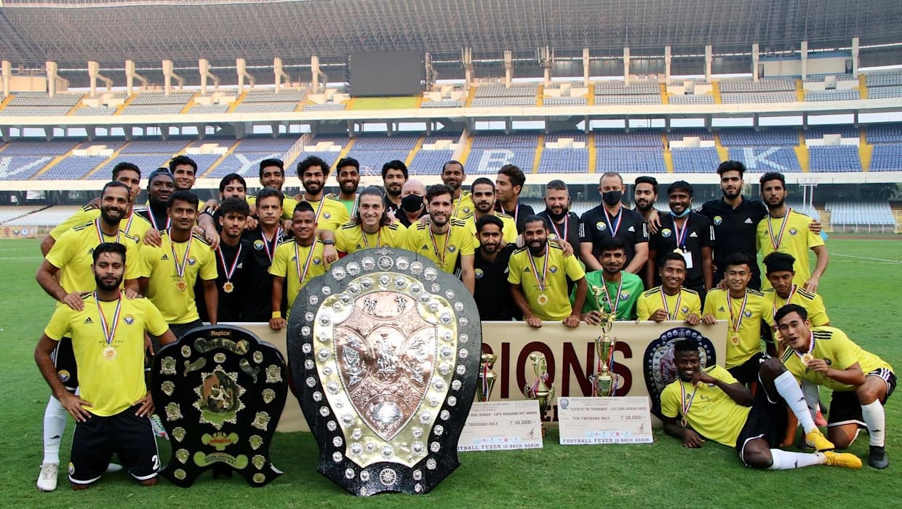
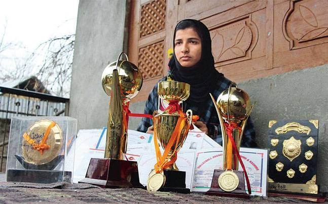

'Kashmir's Ronaldo' Danish Farooq fulfils father's broken dream with India debut.

Real Kashmir FC�s IFA Shield 2020 victory was the official stamp in Indian football�s biggest underdog story.
Mehrajuddin Wadoo (born 12 February 1984) is an Indian professional manager and former footballer,played for clubs such as Mohun Bagan, East Bengal, Pune City, Chennaiyin, and Mumbai City. He also represented the India national team from 2005 to 2011.

Iqra Rasool (born 15 August 2000) is an Indian cricketer and also known as 'Baramulla's supergirl represented Jammu and Kashmir at the U-19 and U-23 level.